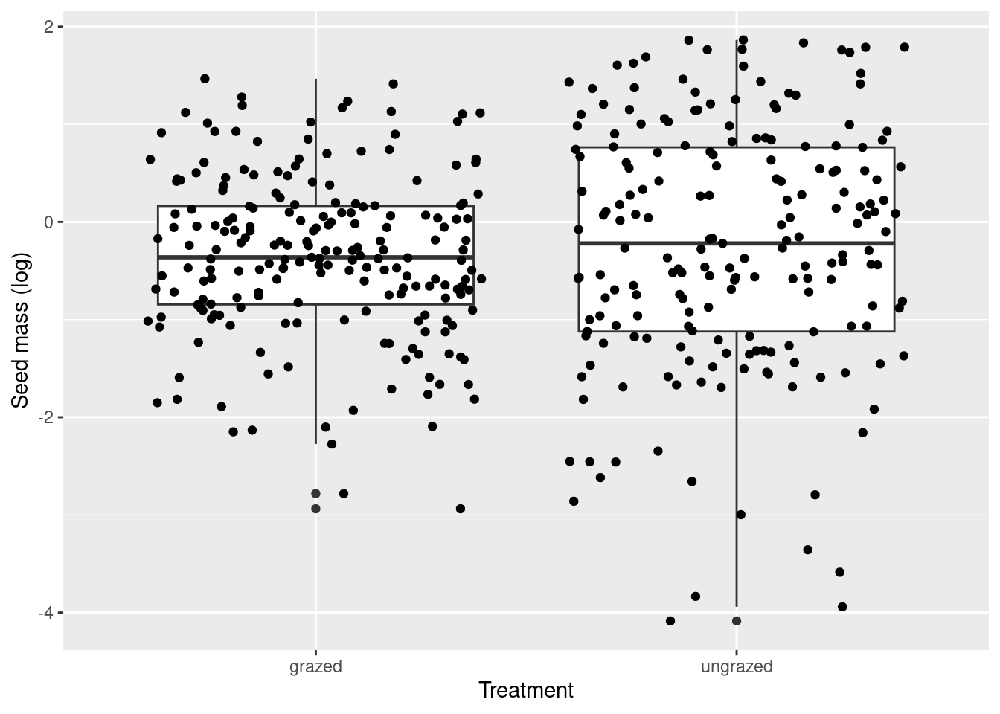

Terrestrial ecosystems were dominated for several million years by large herbivorous mammals, which then declined at the end of the Pleistocene under the pressure of the first prehistoric human populations. The loss of these large herbivore species (aurochs, wild horses and anes, woolly rhinoceros…) was also synonymous with the loss of the ecosystem services they provided. (lundgren2020human?)
For several years, the “rewilding” movement has been aiming to restore these ecosystem services by reintroducing species into large European natural areas, and the present study seeks to assess the extent to which introduced herbivore species have an influence on vegetation. (garido2019experimental?)
MATERIALS AND METHODS
The study site is located approximately 17 km south of Uppsala, Sweden. On this study site, three plots were used. Each plot was divided in two, with an ungrazed part and a grazed part. Four young Gotland stallions were placed in each grazing area for three years.
Numerous variables were studied: - plant height at maturity - seed mass - species richness - plot area occupied by anemogamous plants - plot area occupied by entomogamous plants - RCS score *. Other information was noted at each survey, such as the season, year and observer who carried out the inventory. Information on the insects found on the plot was also recorded, but will not be used in our analysis.
The RCS score corresponds to an index of the strategy used by the plants. (Wood2018microbiomes?)
RESEARCH QUESTIONS
We have chosen to use the (garido2019experimental?) dataset to answer three different questions. Firstly, does grazing have an effect on the plant species richness of plots? Secondly, does grazing have an effect on plant morphology? And finally, does grazing have an effect on plant pollination strategies?
To answer these questions, we transformed the initial dataset to obtain a dataset of 404 records. The variables used are : - treatment (grazed or ungrazed) - season - year - cover.area.bee (plot area occupied by entomogamous plants) - cover.area.gene (plot area occupied by anemogamous plants) - logh (log of plant height) - logS (log of seed mass) - richness (species richness) - observer - R.score - S.score - C.score - ratio poll (cover.area.bee/cover.area.gene)
PACKAGES IMPORT
library(tidyverse)
── Attaching core tidyverse packages ──────────────────────── tidyverse 2.0.0 ──
✔ dplyr 1.1.4 ✔ readr 2.1.5
✔ forcats 1.0.0 ✔ stringr 1.5.1
✔ ggplot2 3.5.0 ✔ tibble 3.2.1
✔ lubridate 1.9.3 ✔ tidyr 1.3.1
✔ purrr 1.0.2
── Conflicts ────────────────────────────────────────── tidyverse_conflicts() ──
✖ dplyr::filter() masks stats::filter()
✖ dplyr::lag() masks stats::lag()
ℹ Use the conflicted package (<http://conflicted.r-lib.org/>) to force all conflicts to become errors
Results for the complete model:
==============================
Call:
LinearModel(formula = num.species ~ (treatment + season + year) *
(treatment), data = df, selection = "aic")
Residual standard error: 2.201 on 394 degrees of freedom
Multiple R-squared: 0.2103
F-statistic: 11.66 on 9 and 394 DF, p-value: 2.732e-16
AIC = 647.3 BIC = 687.3
Results for the model selected by AIC criterion:
===============================================
Call:
LinearModel(formula = num.species ~ treatment + season + year +
treatment:year, data = df, selection = "aic")
Residual standard error: 2.196 on 396 degrees of freedom
Multiple R-squared: 0.21
F-statistic: 15.03 on 7 and 396 DF, p-value: 1.95e-17
AIC = 643.5 BIC = 675.5
Ftest
SS df MS F value Pr(>F)
treatment 107.32 1 107.315 22.255 3.315e-06
season 194.60 2 97.300 20.178 4.518e-09
year 133.15 2 66.575 13.806 1.599e-06
treatment:year 41.47 2 20.734 4.300 0.01421
Residuals 1909.51 396 4.822
Ttest
Estimate Std. Error t value Pr(>|t|)
(Intercept) 8.109457 0.115553 70.1793 < 2.2e-16
treatment - grazed 0.525042 0.111295 4.7176 3.315e-06
treatment - ungrazed -0.525042 0.111295 -4.7176 3.315e-06
season - autumn -0.857605 0.154433 -5.5532 5.150e-08
season - spring 0.127684 0.179319 0.7120 0.4768541
season - summer 0.729922 0.154433 4.7265 3.180e-06
year - 2014 0.924700 0.178175 5.1898 3.370e-07
year - 2015 -0.358379 0.154465 -2.3201 0.0208409
year - 2016 -0.566321 0.154469 -3.6662 0.0002797
treatment - grazed : year - 2014 -0.456895 0.168272 -2.7152 0.0069130
treatment - ungrazed : year - 2014 0.456895 0.168272 2.7152 0.0069130
treatment - grazed : year - 2015 0.089175 0.151774 0.5876 0.5571677
treatment - ungrazed : year - 2015 -0.089175 0.151774 -0.5876 0.5571677
treatment - grazed : year - 2016 0.367720 0.151555 2.4263 0.0156989
treatment - ungrazed : year - 2016 -0.367720 0.151555 -2.4263 0.0156989
The results for the full model are as follows: p-value: 2.554e-16, AIC = 649, BIC = 681. However, the model chosen according to the AIC criterion shows the following results: p-value: 1.41e-17, AIC = 645.2 and BIC = 669.2. As the AIC criterion is smaller for this model than for the full model, we choose to retain: num.species ~ treatment + season + year + treatment:year. There is therefore an interaction between the pasture and its year of observation.
3.Validation of the chosen model with the Bartlett test
Validation of the chosen model with the Bartlett test
bartlett.test(res~treatment,data=df)
Bartlett test of homogeneity of variances
data: res by treatment
Bartlett's K-squared = 1.9684, df = 1, p-value = 0.1606
boxplot(res~season,data=df)
Validation of the chosen model with the Bartlett test
bartlett.test(res~season,data=df)
Bartlett test of homogeneity of variances
data: res by season
Bartlett's K-squared = 4.3645, df = 2, p-value = 0.1128
boxplot(res~year,data=df)
Validation of the chosen model with the Bartlett test
bartlett.test(res~year,data=df)
Bartlett test of homogeneity of variances
data: res by year
Bartlett's K-squared = 3.7679, df = 2, p-value = 0.152
boxplot(res~treatment:year,data=df)
Validation of the chosen model with the Bartlett test
df$interaction <-interaction(df$treatment, df$year)bartlett.test(res ~ interaction, data = df)
Bartlett test of homogeneity of variances
data: res by interaction
Bartlett's K-squared = 6.3, df = 5, p-value = 0.2781
For the Bartlett tests, the p-values are all greater than 0.05, which means that homoscedasticity is respected for all our parameters, or that the variances are all equal for all our observations @ref(fig:fig2).
Shapiro-Wilk normality test
data: res
W = 0.99555, p-value = 0.3061
Residual normality is respected, as our p-value is greater than 0.05: the data are compatible with a normal distribution. Our linear model is therefore valid, as residual normality is a key assumption for applying this model @ref(fig:fig3).
Conclusion: Species richness therefore depends on grazing, season and year, as well as on the interaction grazing:year.
PART 2 - EFFECT OF GRAZING ON THE MORPHOLOGY
In this part, we’ll try to analyse the effect of treatment (grazing), a qualitative variable, on the morphological parameters of the plants (height and seed mass), quantitative variables.
1. Effect of grazing on the plant height
Potential relationship between Height and effect of treatment:
Let’s start by representing plant size as a function of the applied treatment (grazing or no grazing) to have an idea of the possible effect.
boxplot(df$logHeight.score~df$treatment, varwidth =TRUE, ylab ="plant height (log)", xlab ="Treatment", col='darkgrey', main ="", title ="effect of grazing on the height")
The median for the no grazing treatment is slightly higher than for the grazing treatment @ref(fig:fig4). The data also seems slightly more dispersed and spread out. So we could say that the plants without grazing are potentially higher than the ones which had the treatment.
Statistical analysis of the relationship between Height and effect of treatment:
We saw earlier that there could be a potential effect of treatment on the plant’s height, we now want to know if this effect is really significant.
We perform an ANOVA to compare a random model with our model.
Significance test: Hypothesis H0: Grazing has no effect on plant height. Hypothesis H1: Grazing has an effect on plant height.
The p-value is 2.39e-4 < 0.05. The test is significant, so hypothesis H0 is rejected. Grazing significantly reduces plant size.
2. Effect of grazing on the seed mass
Now, let’s study the seed mass of plants in relation to grazing.
Potential relationship between seed mass and effect of treatment:
Let’s start by representing the seed mass of plants as a function of the applied treatment (grazing or no grazing) to have an idea of the possible effect.
boxplot(df$logSeedMass.score~df$treatment, varwidth =TRUE, ylab ="Seed mass (log)", xlab ="Treatment", col='darkgrey', main ="", title ="effect of grazing on seed mass")
Effect of treatment on seed mass
ggplot(data=df)+geom_boxplot(aes(x=treatment, y=logSeedMass.score))+geom_jitter(aes(x=treatment, y=logSeedMass.score))+labs(y ="Seed mass (log)", x ="Treatment")

Effect of treatment on seed mass
Interpretation :
The medians are almost identical @ref(fig:fig5). The data for the no grazing treatment also seems more dispersed and spread out. So we could say that there is potentially no effect of treatment on seed mass.
Statistical analysis of the relationship between Height and effect of treatment:
We saw earlier that there could be no potential effect of treatment on seed mass. We now want to know if there is no significant difference.
We perform an ANOVA to compare the model where we only consider the effect of grazing with a model where the effect of grazing is random.
Significance test: Hypothesis H0: Grazing has no effect on seed mass. Hypothesis H1: Grazing has an effect on seed mass.
Analysis of Variance Table
Model 1: logSeedMass.score ~ 1
Model 2: logSeedMass.score ~ treatment
Res.Df RSS Df Sum of Sq F Pr(>F)
1 403 457.54
2 402 456.58 1 0.96445 0.8492 0.3573
The p-value = 0.3573 > 0.05, so the seed mass under hypothesis H1 is not significantly different from that under hypothesis H0. We can conclude that there is no effect of grazing on seed mass.
3. Is the height of plants only affected by grazing ?
We will now analyze the effect of grazing on plant size more precisely. We want to know if the size is influenced by grazing (treatment) alone or by its interaction with other factors.
For this analysis, we will test the effects of grazing and its interaction with other factors on plant size through model analysis using the BIC criterion.
After the analysis, the final model with the lower BIC is : logH ~ treatment + logS + RatioPoll + R.score + C.score + S.score + treatment:logS + treatment:RatioPoll + logS:R.score + logS:S.score + RatioPoll:C.score + R.score:C.score + C.score:S.score
The results show that the factor treatment (grazing) by itself has no significant effect (p-value = 0.21 > 0.05) on the height of plants and same goes for R.score and S.score. This means that the effect of treatment that we previously saw was mainly due to interactions between treatment and other factors.
PARTIE 3: GRAZING EFFECT ON POLLINISATION STRATEGIES
1. Visualization of data and one-factor analysis of variance
Analysis of Variance Table
Model 1: RatioPoll ~ 1
Model 2: RatioPoll ~ treatment
Res.Df RSS Df Sum of Sq F Pr(>F)
1 403 2956.5
2 402 2931.7 1 24.786 3.3987 0.06598 .
---
Signif. codes: 0 '***' 0.001 '**' 0.01 '*' 0.05 '.' 0.1 ' ' 1
The P-value is not significant at the 5% threshold, so we reject the hypothesis that grazing has an effect on the RatioPoll. The Anova test confirms our graphical observation: there is no difference between the grazed and natural plots.
Results for the complete model:
==============================
Call:
LinearModel(formula = RatioPoll ~ (treatment + season + year +
observer + R.score + S.score + C.score) * (treatment + season +
year + observer + R.score + S.score + C.score), data = df,
selection = "aic")
Residual standard error: 2.562 on 370 degrees of freedom
Multiple R-squared: 0.1787
F-statistic: 2.439 on 33 and 370 DF, p-value: 3.229e-05
AIC = 792.6 BIC = 928.6
Results for the model selected by AIC criterion:
===============================================
Call:
LinearModel(formula = RatioPoll ~ treatment + season + year +
R.score + S.score + C.score + treatment:R.score + treatment:C.score +
season:R.score + season:S.score + year:R.score + year:C.score +
R.score:C.score + S.score:C.score, data = df, selection = "aic")
Residual standard error: 2.537 on 383 degrees of freedom
Multiple R-squared: 0.1662
F-statistic: 3.816 on 20 and 383 DF, p-value: 1.16e-07
AIC = 772.7 BIC = 856.7
Ftest
SS df MS F value Pr(>F)
treatment 0.46 1 0.463 0.0719 0.788707
season 37.94 2 18.970 2.9472 0.053681
year 11.28 2 5.640 0.8762 0.417215
R.score 32.37 1 32.371 5.0291 0.025497
S.score 2.80 1 2.803 0.4354 0.509748
C.score 0.00 1 0.001 0.0002 0.990072
treatment:R.score 52.95 1 52.954 8.2269 0.004356
treatment:C.score 65.29 1 65.287 10.1429 0.001567
season:R.score 31.54 2 15.770 2.4500 0.087647
season:S.score 24.73 2 12.366 1.9211 0.147854
year:R.score 43.06 2 21.532 3.3451 0.036290
year:C.score 26.21 2 13.107 2.0362 0.131930
R.score:C.score 28.24 1 28.243 4.3878 0.036853
S.score:C.score 19.80 1 19.804 3.0767 0.080223
Residuals 2465.27 383 6.437
Ttest
Estimate Std. Error t value Pr(>|t|)
(Intercept) 0.216628 0.554131 0.3909 0.696064
treatment - grazed 0.100399 0.374374 0.2682 0.788707
treatment - ungrazed -0.100399 0.374374 -0.2682 0.788707
season - autumn -0.982083 0.406102 -2.4183 0.016058
season - spring 0.456660 0.475236 0.9609 0.337202
season - summer 0.525422 0.455257 1.1541 0.249170
year - 2014 0.748663 0.571102 1.3109 0.190674
year - 2015 -0.303283 0.479913 -0.6320 0.527794
year - 2016 -0.445380 0.480008 -0.9279 0.354064
R.score 12.133698 5.410655 2.2426 0.025497
S.score -3.199071 4.848189 -0.6598 0.509748
C.score 0.025179 2.022135 0.0125 0.990072
treatment - grazed : R.score 6.020273 2.098934 2.8683 0.004356
treatment - ungrazed : R.score -6.020273 2.098934 -2.8683 0.004356
treatment - grazed : C.score -3.909367 1.227511 -3.1848 0.001567
treatment - ungrazed : C.score 3.909367 1.227511 3.1848 0.001567
season - autumn : R.score 5.258101 2.401900 2.1891 0.029190
season - spring : R.score -2.739087 3.015881 -0.9082 0.364332
season - summer : R.score -2.519015 2.651050 -0.9502 0.342612
season - autumn : S.score 4.873384 3.018905 1.6143 0.107288
season - spring : S.score -6.191616 3.371962 -1.8362 0.067102
season - summer : S.score 1.318232 2.969647 0.4439 0.657364
year - 2014 : R.score -7.443157 3.103236 -2.3985 0.016939
year - 2015 : R.score 2.072046 2.435265 0.8509 0.395384
year - 2016 : R.score 5.371111 2.368027 2.2682 0.023874
year - 2014 : C.score 2.467530 1.456367 1.6943 0.091020
year - 2015 : C.score -0.196500 1.156556 -0.1699 0.865178
year - 2016 : C.score -2.271030 1.181944 -1.9214 0.055419
R.score : C.score -35.308042 16.855766 -2.0947 0.036853
S.score : C.score 26.694777 15.219008 1.7540 0.080223
The model proposed by R does have a lower BIC than our initial model. However, some of the interactions retained by R have no significant effect. We decided to test a model without these interactions.
Shapiro-Wilk normality test
data: res
W = 0.87207, p-value < 2.2e-16
Conclusion: We cannot evaluate the impact of grazing on the pollination strategy of plants because the constraints of the general linear model are not respected. In addition, we cannot apply a generalized linear model given the type and values of our data.
GLOBAL CONCLUSION
Grazing does have a positive effect on species richness, and this effect is all the more beneficial in spring.
Grazing has no effect on the seed weight of plants, but does tend to reduce plant height (plant avoidance strategy). However, plant height is not solely a consequence of grazing, it also depends on other physiological parameters (pollination mode, RCS profile, seed weight…) that can be integrated into a model close to a linear model.
Grazing has no effect on the plants’ sexual reproduction strategy, and does not favor the survival of entomogamous plants over others.